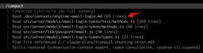
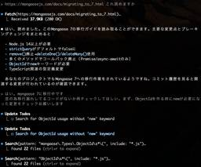

橋本商会 - Cosense
https://scrapbox.io/shokai
shokai / 階層整理型WiKiはスケールしない / 発表資料 / Scrapboxをグループでどう使っていくか？ / 熟練者と同等のCosense読み書きを実現するハーネスとAgent Skill / ServiceWorkerとCacheによるSPAの高速化、オフラインモード / ソフトウェアの連続自動修正/マージ/デプロイが認められるのは、副作用バグや仕様変化のリスクを許容できるか次第
フィード
ソフトウェアの連続自動修正/マージ/デプロイが認められるのは、副作用バグや仕様変化のリスクを許容できるか次第
橋本商会 - Cosense
コードパトロールレポートをcodepatrol-triageで分類すると、脆弱性のリストを3×3に分類できる こう整理したら一気に自動化が受け入れられた脆弱性修正では 深刻度が高く、修正難度が低い問題ほど、リスク許容できる 脆弱性を深刻度 x 修正難度のmatrixにプロットすると良い table:修正難度と深刻度 修正難度1修正難度2修正難度3 深刻度High自動修正自動修正？人間が見る 深刻度Medium自動修正人間が見る人間が見る 深刻度Low自動修正人間が見るやらなくていい 人間が見る、とは コードを手で書くという意味ではない 人間がsoftware-factory-mode-2026aki skillを使いつつ、細かく意思決定しながら進める
9時間前
codepatrol skill
橋本商会 - Cosense
shokai.icon作の脆弱性診断ツール Agent Skillとして実装されている Opus 4.6 + GPT-5以上が同時に使える事を前提に作ったSkillです。Sonnet等で起動しても停止するようになっていますshokai/agent-skillsからインストールできる https://github.com/shokai/agent-skills/tree/main/plugins/codepatrol動作 /codepatrolで起動 調査対象領域リスト targets.md 初回起動時に作成される サーバー側のコードのcontrollerのリストと、内容のサマリー 「調査対象リストを更新しろ」で再作成できる 調査観点リスト checklist.md 初回起動時に作成される Skillに内蔵された、典型的なSaaSに共通なセキュリティチェックリストに
9時間前
修正難度順トリアージ
橋本商会 - Cosense
codepatrol-triageで実装した分類 1. 仕様変更のための意思決定が必要ないbug 2. 仕様変更のための意思決定が必要だが、レビュアーへの説明は容易なbug 3. データモデルやセキュリティモデルが大きく変化する、ユーザーに周知が必要、等でレビュアーへの説明が大変なbug1は、software-factory-mode-2026aki skillを正しく使えるなら誰でも直せる プロセスが正しければ直せる それぐらい、単純に埋めれば直る穴ならば周りの建物を壊さずに修復できるプロセスがもう確立している ソフトウェア開発者以外でもbug修正に参加できるという事では、まったくない 「stripeからのwebhookがinvalidな場合は400を返して良いですか？それとも200のまま処理分岐しますか？」これぐらいの情報量の質問は複数されるので、サッと意思決定できる知識や調査能力は必要2以降が難しくなる3は、そのプロダクトの開発者自身が後先考えながら設計修正しないと無理 プロダクト外から来たソフトウェア工場長の手には負えない代物。今は。Software Factoryの進化によって、それなりに設計のセンスがある人なら3も修正できるようになるだろう ユーザーへの周知、データマイグレーションの見守り、をAIがやれるようになれば
21時間前
なぜpull request概要欄をAI使わず人力で書いているのか (shokai)
橋本商会 - Cosense
楽だからですshokai.icon AIにはドキュメントとコードの読み合わせをやってもらう sanity-reviewや、pull requestの概要欄とレビューコメントを書きました。間違いや説明不足な点があれば指摘してくださいなど、正気を疑うツールが使える状態になる pull request概要欄は人間とAI向けの宣言を書く場所と考えるコードレビューやbugの確認をする時、pull request概要欄に書かれた宣言が役に立つ確認項目が3つある場合 AIに「JSをTSに書き直しました。動作が変化してしまっていないか確認してください」と指示するのではなく pull request概要欄に「いくつかのJSをTSに書き直しました。動作は変更していません」と書く AIに「API v2を追加したが、API v1の動作は変化してしまっていませんか？後方互換性を維持したいので確認してほしい」と指示するのではなく pull request概要欄に「API v2を追加した。後方互換性を維持するため、API v1の動作は一切変更していない」と書く AIに「このブランチで新規実装したserver API全てに、testの実装漏れがないか確認してください」と指示するのではなく pull request概要欄に「新規実装した全てのserver APIは、アクセス権限を持たないユーザーを拒否する事を確認するtestが実装されている」と書くそしてAIに「概要欄の説明とコードの実装に齟齬が無いか確認してください」と指示する
2日前
pull requestの概要欄を書きました。間違いや説明不足な点があれば指摘してください
橋本商会 - Cosense
vibe codingによる実装後の、自分の理解が正しいか確認するためのプロンプト まずAIと一緒に作業した結果の、最終的な仕様を自分なりに説明しなおす それをAIに確認してもらう事で、自分の理解が正しいかわかる 結構勘違いしている事がある 説明不足な点もかなり良い塩梅に指摘してくれる 対話・相談してコードを書いてbug修正も一緒にやった、十分なcontextを持ったAIだから 人間が読むのにちょうど良い粒度の概要欄になる typoも指摘してくれるpull requestの概要欄は人間が手書きするようにしているshokai.icon AIにpull request概要欄を書いてもらうのは機会損失である プロセスとしてCosenseに書いた概要をpull requestの概要欄にコピペしない。自分の言葉で書き直すの邪魔にならない点も、良い なぜpull request概要欄を丁寧に書いているのかを満たしつつ丁寧に、正確にやれる 自分で書く。それをAIにレビューしてもらう 手を動かしたAIと、構想を練った自分の間の認識違いを無くす 自分が仕様の詳細を勘違いしている事がわかったりする 考えるために書く。人に伝えるために書くと、ようやく、実は必要なのはコレではないのかもしれない、とか気づいたりする
2日前
shokai/agent-skills
橋本商会 - Cosense
shokai.icon製Agent SkillsのClaude Marketplace https://github.com/shokai/agent-skills特定プロダクトの開発に用途が限定されない、汎用的なSKILL.mdが公開されている収録されているもの sanity-review ライブラリ更新レビュー手順書 Agent Skills版 Claude CodeからCodex CLIを呼び出して相談させるAgent Skill 対話コンテキストをテキストファイルにexport/importし、別のAI sessionに引き継ぐAgent Skill 定石外発想Agent Skill codepatrol skill software-factory-mode plugin kuden plugin skill-usability-test skill dependency-update plugin remote-claude-session skill
2日前
トリアージという言葉の意味はバグ報奨金プログラムによって破壊された
橋本商会 - Cosense
Helpfeel社内では、トリアージを「大量の偽物の中から本物を見つける」という意味で使われてしまっている 例：「そのbugが再現するかトリアージして」 もしかしたら多くのソフトウェア開発の現場でも、同様かもしれないだいたいバグ報奨金プログラムのせいshokai.icon 自称セキュリティリサーチャーによる再現しない大量の報告を選別するという、本来のトリアージとはかけ離れた言葉になってしまったトリアージの元々の、医療での意味 実際に困っている相手のうち、誰を優先対処するか決める 自分のリソースと相手の状態を鑑みて決める、という意味だったのに 大量の偽の患者から、本物の患者を見つけ出す作業に変化してしまった修正難度順トリアージは真の意味でのトリアージですshokai.icon
3日前
AIを使った自動化とは、判断の完全な言語化である。人間が判断を投げ捨ててAI任せにする事ではない
橋本商会 - Cosense
これ間違えて認識してる人多そうshokai.icon AIに全部任せる v.s. 最終責任は誰が取るんだよ、という構図の議論は的外れです いつかすごい賢いAIやツールが来て、全部任せるか、自分で責任取るか、という世界観 少なくともshokai.iconのやってる領域はそうならない。判断は時と場合によるから私はほんの1行のテキスト修正や、git commitコマンド、Githubのmergeボタンを押すような些末な作業も、AIでやっています 面倒くさがっているわけではありません 将来的にブレーキ外して完全自動化するためです 1. まず全ての作業をAIを介して行い、判断だけ人間に残す 2. そして人間の判断を十分に言語化し、仕組みを作れたら、判断というブレーキを外せる すると だんだんAIの作業品質を信頼できるようになってくる これでその工程は完全に自動化できる 様子を見ながら徐々にブレーキを外すという方針に基づいている 具体的なプロセスはAgent Skillは現実の問題を解決した実績あるmemoryから作れに書いたshokai.iconそのためにはレポート作成です 精度の高いレポート・報告書を作る手順書を作る事が、判断の自動化に繋がる
4日前

conversation-context-export
橋本商会 - Cosense
AI対話コンテキストをexportするAgent skill conversation-context-importとセットで使うshokai/agent-skillsからインストールできる 対話コンテキストをテキストファイルにexport/importし、別のAI sessionに引き継ぐAgent Skillで実装し、その後marketplaceにリリースした特に、やらない事とその理由に着目して分類・定型化してexportする やった事を引き継ぐ作業は既存の物が多数あるから AIエージェント本体にも組み込まれているし 人間も、誰でもみんなやってるでしょう。「今回やったことをまとめてくだい」とか やってない事、やらないと決めた事の構造化と引き継ぎはイチイチめんどくさいので、Agent Skill化したという事ですClaude Codeの/compactコマンドとも相性が良い /compactは、やらない事とその理由をほぼ全て捨ててしまう やった事とその理由はかなり引き継がれる compact後に必ず対話コンテキストを読んでくれている もし読んでくれてなかったら手動でconversation-context-importしてください
6日前
AIにいきなり判断させるな、レポートを書かせろ
橋本商会 - Cosense
例えば 状況認識、問題の言語化、解決方法をリストして選択、結論とか 8つの典型的なセキュリティレビュー観点それぞれについて記述させるとかAIにいきなり結論を出させるな かといって自由にも考えさせるな フォーマットを決めて、毎回同じ様に章立てして、結論まで書かせる library-update-reviewやsanity-review、同僚watchのように 形式を揃えたレポートなら速読できる 人間が、AIの出した結論も、それに至る論理も、どちらもレビューできる だんだんとAIの出力を信頼できるようになる AI modelの性能向上も体感できる一旦レポートという形式にすると、それを別のAIでレビューしやすい 別のAI modelで subagentで codex-consultationで レビューで重要なのは検証ではなく主張の方
6日前

ドキュメントとコードの読み合わせ
橋本商会 - Cosense
#AIエージェントにプログラミングさせる時のパターンDevinを見てこういう使い方が一番強みになるだろうなと思ったけど、Devinはボンヤリしているので結局Claude CodeやCodex CLIでやってるshokai.icon スクリーンショットはClaude Codeだが、こういう感じです 2025年5月からwebページを読めるようになって、便利になったこうではない 生成AIにお願いしてコードを書いてもらうこういう用途です pull requestのコードと、 https://scrapbox.io/terms や /help-jp/セキュリティポリシーなどのドキュメントの齟齬がないかDevin.iconにチェックしてもらう 理由あってセキュリティヘッダをゆるくする場合に、バグバウンティプログラムの概要欄と読み合わせて、除外項目として指定した方が良い場合は教えてもらう 新規エラーと、最近のpull requestのコードの対応付けして、実装者に通知する Sentryやcloud loggingから拾う 顧客からのbug報告と、最近のpull requestのコードの対応付けして、実装者に通知するどれも既存ドキュメントと新規実装したコードの読み合わせをしてもらう、という点で一致している
7日前
レビューで重要なのは検証ではなく主張の方
橋本商会 - Cosense
批判的思考の連鎖はこの考えから来ている やった事だけでなく、conversation-context-exportでやらない事とその理由も列挙して それらをsanity-reviewで検証するやり方レビューしにくいPull Request 「できました☺️」「言われた通りに作りました、あなたの指示通りです」レビューしやすいpull request 「こういう問題があって、こう実装しました、仕組みはこれ。実装しなかった案はこういうもので、不採用理由はこれ」後者には反論しやすい 問題認識が間違っているのではないか 問題認識が正しいとして、解決方法が間違っているのではないか 解決方法の実装詳細が間違っているのではないか 採用しなかった案の方が良いのではないか？ほんの少し調整すれば〜つまり主張があれば反論しやすい。そして反論こそが検証ですshokai.icon
7日前

スリッパ暖房
橋本商会 - Cosense
最近はドウシシャ 足元ヒーターではなくAmazonで800円ぐらいで売ってるUSB電熱中敷きを、無印のイ草スリッパの裏に貼って使っている 同じようなのが「USB 中敷き」とかで検索するとたくさん出てくる どれでもいいと思う。安いのを買おう。どうせすぐ壊れるのでスリッパは最近はもっと薄底の方が良くなってきたshokai.icon電源 5V 1AのUSB-A 念の為、パソコンのUSBポートには接続しない方がいい直接スリッパの中にセットすると熱すぎる スリッパの裏に貼るのがちょうどよい い草の食感が良い じんわり温かい
9日前
semirara
橋本商会 - Cosense
このwikiのこと 2016年春ごろ作った ほぼ今のこのwikiに機能は吸収された (2016/09/14) サーバーサイドレンダリングまわり以外？URL hostname/wiki名/page名になっている wiki名の部分を変えると自由にwikiが作れるようになってる動機 メモ帳 兼 blogがほしかった WYSIWYGいいよね publishする画面と同じ見た目で編集したい でもツールバーごちゃごちゃは嫌、簡単な記法で書きたい 他人にはサーバーサイドレンダリングで見せれて、RSSもあってblogとして使える奴が欲しい Reduxとkoaとasync-awaitを試したかった コード片を貼り付ける場所が欲しい主な機能 がんばって書いたり覚えたりしないでも見やすく表示する編集
23日前
test
橋本商会 - Cosense
熟練者と同等のCosense読み書きを実現するハーネスとAgent Skill更新テストshokai.icon (2023/4/6 20:21)リンクパスワードつきgyazo private projectの画像 更新通知テスト
2ヶ月前
階層整理型WiKiはスケールしない
橋本商会 - Cosense
結論 今後人間を増やさず、新製品を未来永劫作らない会社は階層ドキュメントツールで文書共有していても大丈夫階層整理（フォルダわけ）するWiKi等のドキュメントツールを、複数人のグループで使っていると破綻するパターンがある。原因は大きく分けて2つ 1. 人が増える 2. ルールが増える単体ではまだ根性でなんとかなる。しかし2つが合わさると、「WiKiマスターにお伺いを立ててどのフォルダに入れるか決めてから書いてください」という謎の運用ルールができたり、間違った階層に配置すると「ちゃんとルールに従って整理しろ！」と滅茶苦茶怒られたりするようになって、誰も書かなくなる。1. 人が増える 人間は増える。（会社でもサークルでも） あらかじめ綿密に分類ルールを決めていると、新入りへの周知が面倒くさい ルールを決めた人からすると、せっかく決めたルールを理解せず適当なフォルダに入れる人がアホに見えてイライラしてしまう
2ヶ月前
正気を疑う技術 - bugのないvibe codingを目指して
橋本商会 - Cosense
これはAI Engineering Summit Tokyo 2026の発表資料を、さらに社内勉強会向けに更新したものです 右のメニューのStart presentationでスライドになります AIを使ったオススメ開発フロー 2026年春や Pull Requestの書き方 2026年春のAIコーディング対応バージョンとセットになった話です よりツールの役割や背景にフォーカスした切り口となっておりますAIによって80点程度のコードを書く速度は劇的に上がりました。問題は、出てきたコードを誰がどう信じるかです。Helpfeelはインフラ・金融機関向けにもサービスを提供している為、開発者はAIを盲信せずコードを理解する必要があります。本セッションではAI対話コンテキスト抽出・批判的思考の連鎖・sanity-review等の自作ツールを使い、説明と実装の一致から、やらない事とその理由の妥当性までを確認する開発手法を紹介します。AIに実装させるだけでなく、AIに正気を疑わせる開発プロセスです。こんにちは。橋本翔 (shokai)ですshokai.icon Helpfeel Cosenseのプロダクトマネージャー イオンの丸鶏(1200円ぐらい)に、S&Bの鳥香草焼きスパイスミックス(100円ぐらい)とオリーブオイル塗って、ヘルシオで焼くのにはまっています 鶏の丸焼き今日の話
2ヶ月前
AIを使ったオススメ開発フロー 2026年春
橋本商会 - Cosense
春といいながら書いたの6月だけど、私は3月からこうやってますので許してくださいshokai.iconこれは正気を疑う技術 - bugのないvibe codingを目指しての第二部の部分です 登場するツールの役割は第一部の方を読んでください 書き出してみると、意外とややこしい事やってるなと思ったshokai.iconPull Requestの書き方 2026年春のAIコーディング対応バージョンもセットでどうぞshokai.icon環境 Claude Code (Opus)とCodex CLI (GPT5.5-high以上)を使っています Sonnetにソフトウェアの設計能力はありません。これは指示に基づいて1つのファイルを少し編集する為の、単純労働者です 基本的に全てOpus 4.5で作業した方が良いのではないか？ IMEの辞書によく使うプロンプトを入れておく これはとても便利 daiiz.iconmiyamonz.icon hiroshi.icon こういうのは CLAUDE.md とかに書いてもよさそうかもと思った まさに最近はそんな感じ。AIに「次はこれですね」とガイドしてもらっていますshokai.icon
2ヶ月前
Pull Requestの書き方 2026年春のAIコーディング対応バージョン
橋本商会 - Cosense
2026/3ごろに社内projectに書いたものを持ってきたAIを使ったオススメ開発フロー 2026年春とセットでどうぞshokai.icon前提レビュアーは、AIと実装者の間で何が相談されたのか見えません 見えたとしても、読みきれません これをどうにかする必要がありますshokai.icon 社内規定ではないが、まあ普通に考えてそうだよなという私のやり方を書きます紹介しているAgent Skillは、大抵のAIコーディングエージェントで動くはずです 私はClaude Codeを使っていますが 少なくともCodex CLIでは動くように作っています 本当に普通のAgent Skillなので、たぶんCursorやCopilotでも動くはずです人間にコードレビューを求める前にやるべき2つの事
2ヶ月前
Fable 5使ってみた感想
橋本商会 - Cosense
2026/6/10ごろに社内に書いたFable 5の感想ページですずっと調査してる 不明点・懸念事項があれば何でも私に質問してください。明確になってからplan modeに入りましょうと指示すると3つのExplore agentで調査しはじめる Opusでは1つか2つだった Claude CodeのAsk User Question Toolを出してこちらの回答を待っている間も、Explore agentがコードを読み続けている 調査と入力待ちを並列化しているtokenコストは実測でOpusの10倍になったshokai.icon tokenあたりのコストはOpusの2倍だが こっちの入力を待ってる間もずっと調べてるから10倍かかる LLMのmodel部分はOpusとあまり変わらないんじゃないか？という感触がある。なんとなく。 富豪的で非同期な挙動の戦略が、賢さの秘訣なのではないか？ 7/2に復活したやつでは、そんなにかからなくなった。Ask Question Toolが60秒で推奨選択肢で仮確定されるようになったから1を聞いて10を知るような挙動をしている
2ヶ月前
Skillで言葉の意味を上書きする
橋本商会 - Cosense
Agent SkillはUser Interfaceである 意味を書き換え、認知を捻じ曲げ、思考を誘導して行動を変化させる力を持つ特にFrontmatterによる曖昧なマッチングで発動する事が、意味書き換えを可能としている 例：codex-consultation
2ヶ月前
ToKyoto.js #03
橋本商会 - Cosense
kyoto.jsの東京でやるやつの3回目https://kyotojs.connpass.com/event/402321/ 日時2026/09/03(木) 19:00 〜 22:00 場所株式会社IVRy（三田） 京都 vs 東京で 3 on 3 トークバトルだ！！時刻タイトル発表者チーム18:30開場18:40くらいからOpening Act LTs19:00開始 & 乾杯 & Openingpastak(Kyoto)19:10なぜテストを書いてほしかったのかmacchiitakaKyoto ソフトウェアを変えるには理解が必要 認知限界 人間が扱えるサイズにビジネスロジックを小さくする 壊す 何を壊していいか理解する
2ヶ月前
Codex
橋本商会 - Cosense
OpenAIのAIコーディングエージェント https://chatgpt.com/codexChatGPTアプリ内とCLIとwebと、3つUIがあるwebのやつは 既存のAIコーディングエージェントは開発タスク単体の作業にフォーカスしているのに対して Codexはタスク分割して、マネジメントするためのUIがある というような違いが、昔はあったが 最近はだんだんCodex CLIと差が無くなってきたような気がするshokai.icon
2ヶ月前
ServiceWorkerとCacheによるSPAの高速化、オフラインモード
橋本商会 - Cosense
Cosenseの中で、ServiceWorkerを使って何やってるか解説する FGNエンジニアMeetup vol.1の発表資料こんにちは shokaiですshokai.icon Scrapboxを作っています 横浜の自宅から京都にリモートワークしている 福岡のほうが京都より安いし近い✈️詳細な実装の話 /daiiz/ServiceWorkerを用いたキャッシング戦略 ~Wikiアプリケーションを例に~ by daiiz.icon 半年ぐらい前の資料 これをアップデートしつつ、もう一度噛み砕いて説明したいshokai.icon 普通のSPAを高速化したり、オフライン対応したりする事を考える どこから手を付けるべきか？
2ヶ月前
文芸的データベース - 文書の作成とそのデータベース化を同時に行なう手法
橋本商会 - Cosense
「文芸的データベース」とは、株式会社Helpfeelのshokai.iconが提唱している、 文書の作成とそのデータベース化を同時に行なう手法で、 文書とデータベースのフィールドをひとつの画面に混在させながら 追加したり修正したりして同時に構築していくことにより、 完全に整合性のとれた文書とデータベースを構築しようというもの こんにちはshokai.icon shokaiです Cosense.icon Cosense プロダクトマネージャー コンセプトと機能を考えて実装・運用をしていますこれはHelpfeel Tech Conf 2024の発表資料です 右のメニューのStart presentationでスライドになります今日の話 1. 文芸的データベースとは 2. 機能設計の工夫 3. 実装の面白い所を紹介既に全てのprojectで使えます が、もしAPI quota超えた場合はbusiness projectを優先します
2ヶ月前
熟練者と同等のCosense読み書きを実現するハーネスとAgent Skill
橋本商会 - Cosense
これはToKyoto.js #03の発表資料です 京都のHelpfeel株式会社から来ました shokaiです 東京在住ですレギュレーションを満たす為、先にJavaScriptの話をしますshokai.icon久しぶりにnpm作ったら困惑したTypeScriptで書いたCLIをnpm publish 最近のNode.jsは--experimental-strip-typesが無くなって、--no-experimental-strip-typesになった デフォルトでtype stripする じゃあTSのままnpmリリースできそうだ？ 開発中はTypeScriptで書いて、nodeコマンドで動かしてた そのままpackage.jsonのbinに登録できそう と思っていたのだが publishしたnpmをインストールしたら動かなかった Node.jsのtype strip機能はnode_modulesの中には効かないと知った
2ヶ月前
同僚watchに寄せて
橋本商会 - Cosense
（人それぞれですが）今より大きい仕事をしたい人、あるいは自由に動きたい人は、mentionされる前に自力で情報取得して判断して動くと良いと思いますshokai.icon情報取得の対象はこれまでは「場」でした しかし今はAIがある。「人」をターゲットにして効率的に取得できるようになりました 同僚watchのようなツールを毎日読むのは大変かもしれないが、せめて週1回だけでも、今週あの人は何やってたのかなをたまに眺めるだけで、だいぶ違うと思いますソフトウェア開発者は自分のために自分専用のプログラムをいつでも書けるから、自分が取得する情報をデザインしやすいいチート職業です。強みを生かしましょう人で追う事をオススメする理由がもう1つ この会社（株式会社Helpfeel）のビジネスサイドのslack channelは、部署や案件毎だけでなく、部署間の連絡channelもある channel単位で入っても追えません slackを、slackのUIで読むのは無理です続き：情報を取る、作る、デプロイして経過観察する、というのだけでは足りない。ソフトウェア開発者はただのパイプラインではない
2ヶ月前